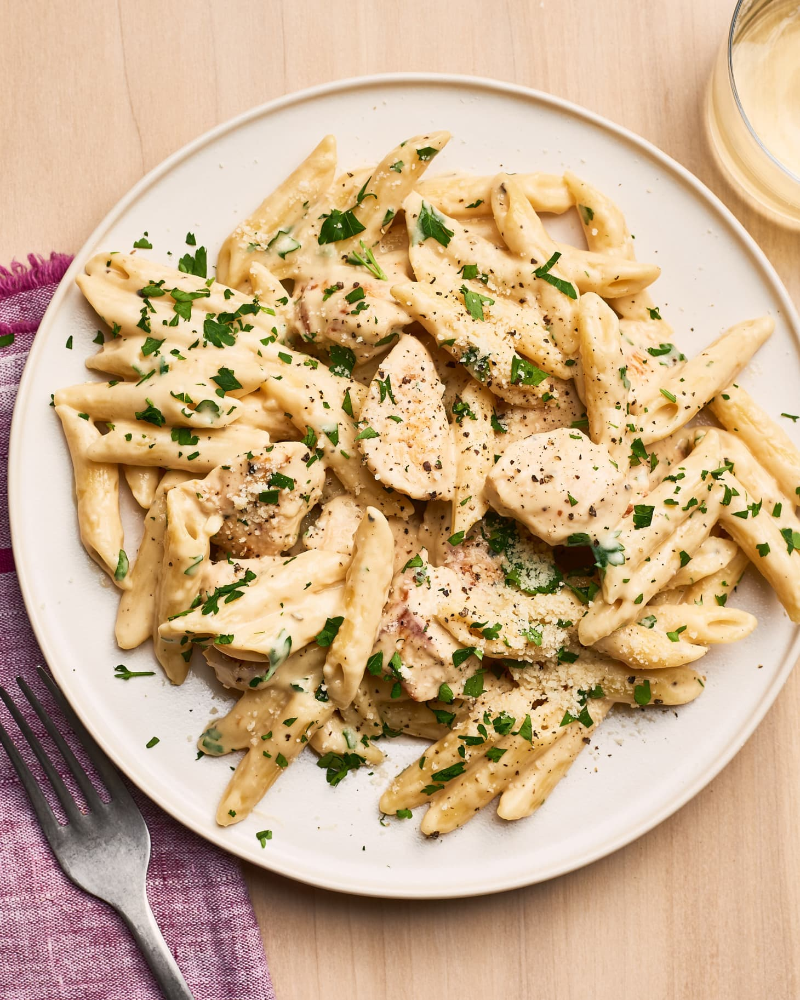

Chicken Alfredo

Description
This creamy chicken alfredo pasta combines tender grilled chicken with fettuccine noodles in a rich, homemade alfredo sauce. It's a restaurant-quality dish you can easily make at home.
The key to a silky smooth alfredo sauce is using freshly grated Parmesan cheese and slowly incorporating it into the cream mixture.
Ingredients
- 1 pound fettuccine pasta
- 2 boneless, skinless chicken breasts
- 2 tablespoons olive oil
- 2 tablespoons Italian seasoning
- Salt and pepper to taste
- 1/2 cup butter
- 2 cups heavy cream
- 4 cloves garlic, minced
- 2 cups freshly grated Parmesan cheese
- 1/4 cup fresh parsley, chopped
Steps
- Season chicken breasts with Italian seasoning, salt, and pepper.
- Heat olive oil in a large skillet over medium-high heat. Add chicken and cook for 5-7 minutes per side, until fully cooked. Remove from pan, let rest for 5 minutes, then slice into strips.
- Meanwhile, bring a large pot of salted water to a boil. Add fettuccine and cook according to package directions until al dente. Drain and set aside.
- In the same skillet used for the chicken, melt butter over medium heat. Add minced garlic and cook for 1 minute until fragrant.
- Add heavy cream and bring to a simmer. Cook for 5 minutes, stirring occasionally.
- Reduce heat to low and gradually whisk in Parmesan cheese until melted and sauce is smooth.
- Add cooked pasta to the sauce and toss until well coated.
- Add chicken strips on top and garnish with chopped parsley.
- Serve immediately with additional grated Parmesan if desired.
Home